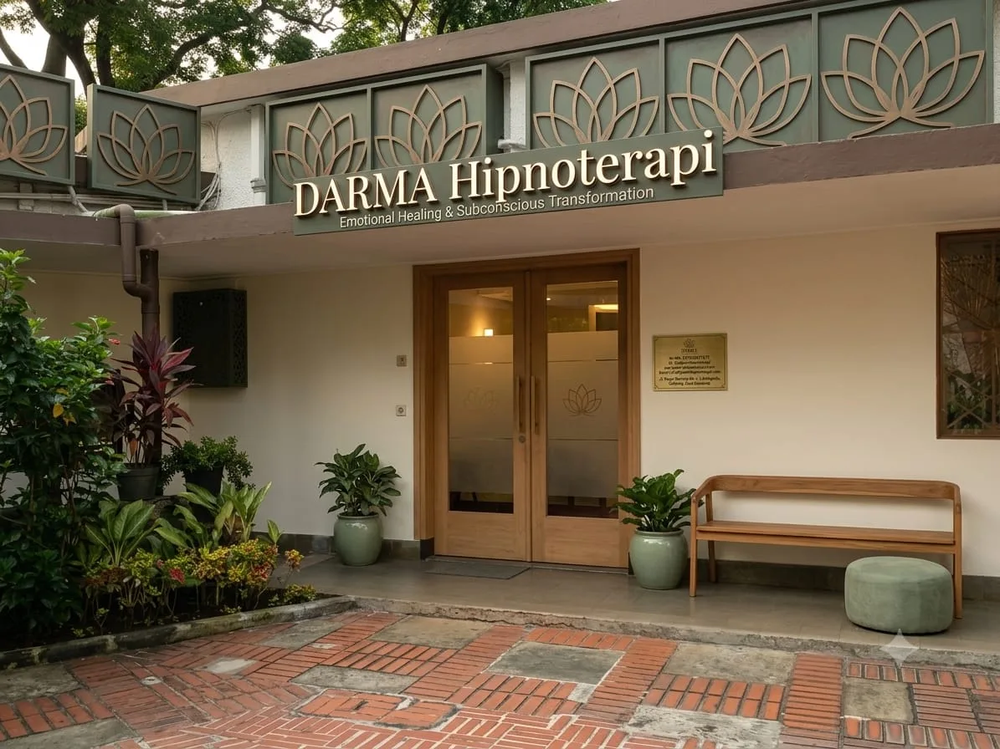

Trauma Healing Adalah: Pengertian Lengkap, Proses, dan Mengapa Penting

Trauma healing adalah proses aktif memproses dan mengintegrasikan luka emosional dari pengalaman traumatik — bukan sekadar melupakan, tapi membebaskan diri dari muatan emosional yang masih aktif mempengaruhi kehidupan hari ini.
Setiap orang pernah mengalami momen yang menyakitkan. Tapi tidak semua pengalaman menyakitkan meninggalkan bekas yang dalam. Trauma terjadi ketika pengalaman terlalu berat untuk diproses oleh sistem saraf pada saat kejadian — dan "tersimpan" dalam kondisi yang belum selesai di dalam tubuh dan pikiran bawah sadar.
Di sinilah trauma healing mengambil peran: proses aktif untuk kembali mengakses, memproses, dan mengintegrasikan pengalaman tersebut sehingga ia tidak lagi mengendalikan respons, emosi, dan pilihan hidup kita.
Apa itu Trauma Healing?
Trauma healing adalah perjalanan yang melibatkan tiga komponen utama:
- Pemrosesan — mengakses kembali memori dan emosi yang tersimpan secara aman
- Pelepasan — melepaskan muatan emosional yang masih menempel pada memori tersebut
- Integrasi — mengintegrasikan pengalaman sebagai bagian dari sejarah diri, bukan beban aktif
Hasil dari trauma healing yang berhasil bukan kehilangan memori akan kejadian — tapi mengubah hubungan kita dengan memori itu. Kamu masih bisa mengingat, tapi tanpa lagi dibanjiri oleh emosi yang sama intensnya seperti ketika itu terjadi.
Layanan trauma healing profesional tersedia di Hipnoterapi Bandung.
Mengapa Trauma Tidak Sembuh Sendiri?
Pertanyaan yang wajar: "Kenapa tidak bisa move on saja?" Jawabannya ada di cara otak memproses trauma. Ketika terjadi sesuatu yang sangat mengancam atau overwhelming, otak tidak sempat memproses kejadian itu secara utuh — ia menyimpannya dalam kondisi "mentah" dengan semua muatan emosional dan sensasi fisiknya masih aktif.
Trauma tersimpan bukan hanya di pikiran — tapi di tubuh. Itu mengapa teknik yang hanya menyentuh level verbal sering tidak cukup.
Pendekatan Trauma Healing yang Efektif
Ada berbagai pendekatan trauma healing yang tersedia, masing-masing dengan kelebihan dan konteksnya:
| Pendekatan | Cara Kerja | Kelebihan |
|---|---|---|
| Hipnoterapi Klinis | Akses bawah sadar langsung | Cepat, mendalam, non-verbal |
| EMDR | Desensitisasi via eye movement | Efektif untuk PTSD |
| Somatic Therapy | Melalui sensasi tubuh | Untuk trauma yang "tersimpan di tubuh" |
| Terapi Bicara (CBT) | Restrukturisasi pikiran sadar | Untuk pola kognitif |
| Self-healing mandiri | Journaling, meditasi, dll | Accessible, tapi terbatas |
Di Hipnoterapi Bandung, pendekatan kami untuk trauma healing mengintegrasikan hipnoterapi klinis dengan prinsip-prinsip EMDR dan somatic awareness — menciptakan pendekatan yang komprehensif dan disesuaikan dengan setiap klien.
Pertanyaan Umum tentang Trauma Healing
Trauma healing adalah proses aktif memproses dan mengintegrasikan luka emosional dari pengalaman traumatik — bukan tentang melupakan, tapi membebaskan diri dari muatan emosional yang masih aktif mempengaruhi kehidupan hari ini.
Teknik mandiri bisa membantu, namun untuk trauma yang lebih dalam pendampingan profesional sangat direkomendasikan. Hipnoterapi klinis di Bandung menawarkan pendekatan yang aman dan terstruktur untuk berbagai jenis trauma.
Sangat bervariasi. Trauma spesifik bisa diselesaikan dalam 3-6 sesi. Trauma kompleks atau yang sudah berlangsung lama membutuhkan waktu lebih panjang. Assessment awal membantu memberikan gambaran yang lebih spesifik.
Kamu bisa mengingat kejadian tanpa dibanjiri emosi yang sama intensnya. Trigger yang dulu memicu reaksi berlebihan kini bisa dihadapi lebih tenang. Pola hubungan dan perilaku yang berulang mulai berubah.
Mulai perjalanan trauma healing dengan konsultasi awal.